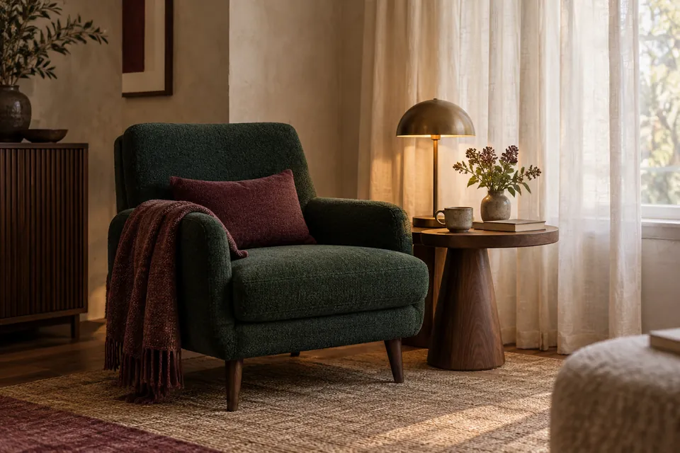
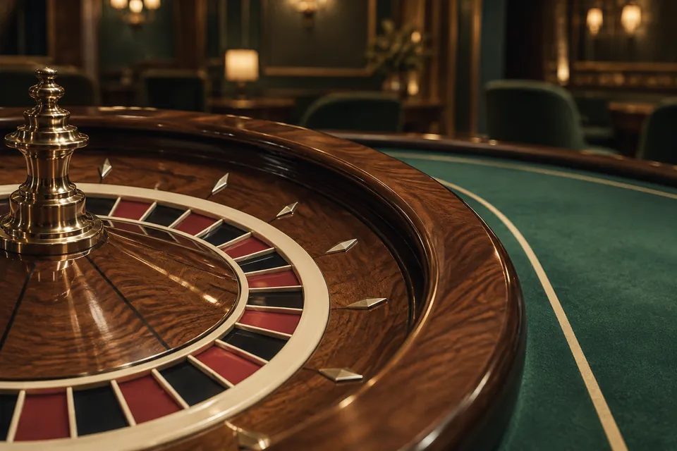

De stad ontdekken.
De avond beleven.
Een hotelovernachting, een bezoek aan een fysiek casino en de ruimte om Amsterdam te ontdekken. Stel uw eigen verblijf samen.
Plan uw casinobezoek18+ Toegang tot het casino vanaf 18 jaar

Een echte plek.
Een persoonlijk plan.
Deze gids gaat over de fysieke vestigingen van Holland Casino in Amsterdam en een hotel bij Sloterdijk.
Ontdek het verblijfUw verblijf, in drie delen
Alles op zijn plek.
Het verblijf / Sloterdijk
Een uitvalsbasis.
Uw eigen ritme.
Park Inn by Radisson Amsterdam City West ligt aan de La Guardiaweg 59. De casinovestiging bevindt zich op nummer 61: twee adressen om vooraf goed uit elkaar te houden.
Boek uw kamer rechtstreeks bij het hotel. Een kamerreservering is geen toegangsbewijs voor het casino.
Meer over het hotel

Het bezoek / Alleen ter plaatse
De avond begint
met een goed plan.
Voor een bezoek aan Holland Casino kiest u eerst de vestiging: Amsterdam Centrum of Amsterdam Sloterdijk. Bekijk het juiste adres en de actuele toegangsvoorwaarden voordat u vertrekt.
Stel vooraf een geld- en tijdslimiet vast. Gokken is geen manier om geld te verdienen.
Bekijk de fysieke locatiesVoor vertrek
Goed voorbereid,
rustig op pad.
Een paar antwoorden die uw bezoek overzichtelijk houden.
Is dit een officiële hotel- of casinosite?
Nee. Dit is een onafhankelijke bezoekersgids. Het hotel en de casino’s verzorgen hun eigen reserveringen, toegang en dienstverlening. U vindt hier praktische informatie en verwijzingen naar hun eigen websites.
Kan ik hier een kamer reserveren?
U reserveert rechtstreeks via de officiële hotelwebsite. Deze gids verwerkt geen reserveringen of betalingen. Bekijk de kamerinformatie voordat u doorgaat naar het hotel.
Wat heb ik nodig voor een casinobezoek?
U moet minimaal 18 jaar zijn en een geldig identiteitsbewijs meenemen. De aanbieder controleert de toegang en Cruks. Controleer voor vertrek ook de actuele huisregels van de vestiging.
Zijn de afbeeldingen echte foto’s van de locaties?
De afbeeldingen zijn speciaal gemaakte AI-sfeerillustraties. Ze tonen geen feitelijke kamers of casinozalen. Bekijk voor echte accommodatiebeelden de officiële website van de betreffende aanbieder.